Heston Model Calibration
| Objectifs du projet | Comprendre et appliquer les techniques d’analyse des risques financiers |
| Principales notions abordées | |
| Méthode de mesure de marché | Sensibilité, VaR, volatilité, Tracking Error, Stress tests et profil de liquidité |
| Risque de crédit | Intensité de defaut, sensibilité des obligation par rapport au spread de creadit, triangle du crédit |
| Risque de contrepartie | mitigation du risque via les appels de marge |
| Risque climatique et Risque modèle | Définitions |
I. Risques de marché
I.1. Construction
Construction d’un portefeuille diversifié
On construit un portefeuille constitué de 10 entreprises du CAC40. Nous avons choisi des entreprises de secteurs variés afin de s’assurer que le portefeuille soit diversifié.
Ainsi, notre portefeuille est constitué des entreprises des secteurs suivants :
- Banque et assurance : BNP Paribas (BN.PA), Crédit Agricole (CA.PA)
- Aéronautique et défense : Airbus (AIR.PA)
- Technologie : Capgemini (CAP.PA)
- Concession et Construction: Vinci (DG.PA)
- Télécommunications : Orange (ORA.PA)
- Énergie : Engie (ENGI.PA)
- Luxe & Consommation : LVMH (MC.PA)
- Médias & Divertissement : Vivendi (VIV.PA)
- Industrie Chimique : Air Liquide (AI.PA)
Nous allons procéder à une optimisation de Markowitz visant à construire un portefeuille qui minimise la volatilité (risque) sous la contrainte d’un niveau de rendement modulable en fonction du profil de risque de l’investisseur.
# On recupère les données sur un historique de deux ans
end_date = '2025-03-16'
start_date = (datetime.strptime(end_date, '%Y-%m-%d') - timedelta(days=2*365)).strftime('%Y-%m-%d')
tickers = ['AI.PA', 'AIR.PA', 'BN.PA', 'CA.PA', 'CAP.PA', 'DG.PA', 'ENGI.PA', 'ORA.PA', 'SAN.PA', 'VIV.PA']
df = yf.download(tickers, start=start_date, end=end_date)[['Close', 'Volume']]
cac40 = yf.download('^FCHI', start=start_date, end=end_date)[['Close', 'Volume']]
YF.download() has changed argument auto_adjust default to True[*********************100%***********************] 10 of 10 completed
[*********************100%***********************] 1 of 1 completed| Price | Close | Volume | ||||||||||||||||||
|---|---|---|---|---|---|---|---|---|---|---|---|---|---|---|---|---|---|---|---|---|
| Ticker | AI.PA | AIR.PA | BN.PA | CA.PA | CAP.PA | DG.PA | ENGI.PA | ORA.PA | SAN.PA | VIV.PA | AI.PA | AIR.PA | BN.PA | CA.PA | CAP.PA | DG.PA | ENGI.PA | ORA.PA | SAN.PA | VIV.PA |
| Date | ||||||||||||||||||||
| 2023-03-17 | 129.159073 | 113.835022 | 50.799267 | 15.853839 | 161.051727 | 95.704536 | 11.138248 | 9.250590 | 83.118538 | 8.390330 | 1971502 | 2171272 | 3041249 | 4474936 | 719990 | 3575676 | 12989586 | 20039590 | 5122220 | 7405822 |
| 2023-03-20 | 132.019150 | 115.648735 | 51.172382 | 16.082874 | 161.292603 | 96.907097 | 11.249365 | 9.359113 | 82.803841 | 8.565089 | 1139355 | 1290939 | 1697298 | 2379408 | 418826 | 1207887 | 7087933 | 9795603 | 2119074 | 2624806 |
Comme indicateur quantifiable de cette diversification nous presentons ci après la matrice de correlation entre les rendements journaliers des actifs du portefeuille pour notre période d’étude.
# Calcul de la matrice de corrélation
corr_actifs = returns.corr().to_numpy()
# Affichage du corrélogramme
plt.figure(figsize=(10, 8))
sns.heatmap(corr_actifs, annot=True, fmt='.2f', cmap='coolwarm', xticklabels=returns.columns, yticklabels=returns.columns)
plt.title("Corrélogramme des actifs")
plt.show()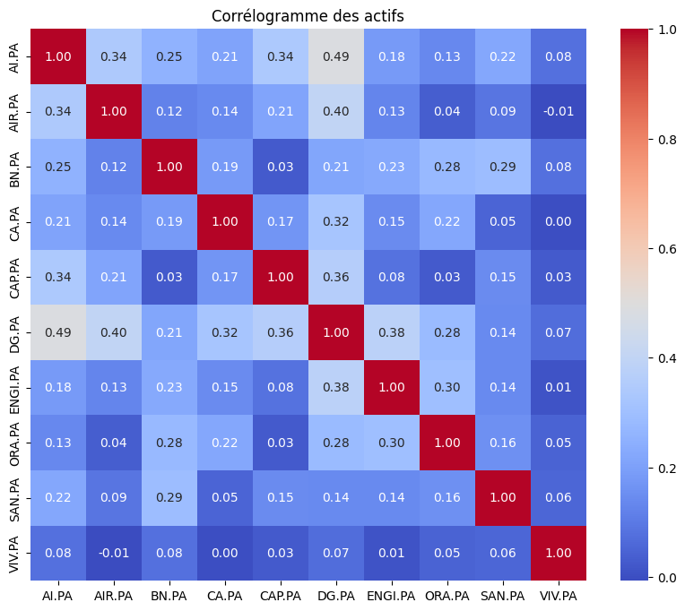
I.1.1 Présentation du principe d’optimisation de Markovitz
L’optimisation de Markowitz, également connue sous le nom de théorie moderne du portefeuille (MPT), permet de construire un portefeuille optimal en combinant des actifs de manière à minimiser la volatilité (ou le risque) tout en respectant une contrainte sur un niveau de rendement fixé. L’un des éléments clés de cette théorie est la détermination des poids de chaque actif dans le portefeuille, afin d’atteindre un compromis optimal entre le risque et le rendement.
Hypothèses principales :
- Les décisions sont prises en fonction du couple rendement-risque.
- Les investisseurs cherchent à diversifier leurs actifs pour réduire le risque.
- L’accès au taux sans risque est illimité.
- Aucun coût de transaction n’est pris en compte.
Programme d’optimisation :
L’objectif est de minimiser la volatilité sous la contrainte d’un rendement cible $ _T $ :
\[
\text{Minimiser } \omega^t\Sigma \omega
\] Sous les contraintes :
$$
I.1.2 Calcul des rendements annualisées et des volatilités annualisés des log_rendements pour chaque actif
I.1.3. Optimisation du portefeuille
L’investisseur a la latitude de shorter ou pas (via l’argument Positive de la foncion efficient_portfolio qui donne la latitude de lever la contrainte de positivité des coefficients), également de definir le niveau de rendement souhaité (via l’argument mu_target de la même fonction).
Dans le cadre de l’exercice, pour des raisons de simplification et pour rester cohérent avec la suite, nous avons opté pour un portefeuille sur des positions longues.
from scipy.optimize import minimize
import numpy as np
# Nombre d'actifs
n_assets = len(yearly_return)
mu = yearly_return
def portfolio_variance(weights):
return weights.T @ sigma @ weights
def weight_sum_constraint(weights):
return np.sum(weights) - 1
def target_return_constraint(weights, mu_target):
return weights.T @ mu - mu_target
def efficient_portfolio(mu_target, range_=(-0.1, None), positive=True):
# On initialise les poids de maniere équitable
init_weights = np.ones(n_assets) / n_assets
# Contraintes
constraints = [
{'type': 'eq', 'fun': weight_sum_constraint},
{'type': 'eq', 'fun': lambda w: target_return_constraint(w, mu_target)}
]
# On verifie si on a définit une contrainte de positivité
if positive:
bounds = [(0, None) for _ in range(n_assets)] # Chaque poids doit être >= 0
else:
bounds = [range_ for _ in range(n_assets)]
# Optimisation
result = minimize(portfolio_variance, init_weights, bounds=bounds, method='SLSQP', constraints=constraints)
if result.success:
optimal_weights = result.x
portfolio_volatility = np.sqrt(portfolio_variance(optimal_weights))
return portfolio_volatility, optimal_weights
else:
return None, NoneI.1.4 Illustration pour un rendement cible de 10%
Pour un rendement annuel cible de 10%, correspondant à l’ordre de grandeur des rendements du CAC40 qui représente le benchmark du fond, les poids optimaux donnés par le l’optimisation de Markovitz et qui ont permis de minimiser le risque auquel est exposé le porte feuille ( 9.67% de volatilité) sont donnés ci après:
# Rendement cible
mu_target = 0.1
# les poids optimaux et la volatilité
vol, weights = efficient_portfolio(mu_target)
print("Le portefeuille ainsi construit a un rendement de",round(weights.T @ mu,4), "et est soumis à une volatilité de l'ordre de :", round(vol,4), "\n")
print("---"*50)
print("Les poids associés aux actifs du porte feuille sont listés ci après:\n")
i = 0
for column in df_close.columns.tolist():
print(f"{column}, {weights[i]:.4f}")
i += 1Le portefeuille ainsi construit a un rendement de 0.1 et est soumis à une volatilité de l'ordre de : 0.0989
------------------------------------------------------------------------------------------------------------------------------------------------------
Les poids associés aux actifs du porte feuille sont listés ci après:
AI.PA, 0.0234
AIR.PA, 0.0399
BN.PA, 0.2027
CA.PA, 0.1928
CAP.PA, 0.1253
DG.PA, 0.0000
ENGI.PA, 0.0731
ORA.PA, 0.2652
SAN.PA, 0.0541
VIV.PA, 0.0235plt.figure(figsize=(10, 6))
bars = plt.bar(df_close.columns.tolist(), weights*100, color='skyblue')
plt.title(f"Poids optimaux des actifs dans le portefeuille (Volatilité: {round(vol, 4)})")
plt.xlabel("Actifs")
plt.ylabel("Poids (en %)")
plt.xticks(rotation=45, ha='right')
plt.grid(True)
# Ajout des étiquettes sur chaque barre
for bar, weight in zip(bars, weights):
plt.text(bar.get_x() + bar.get_width() / 2, bar.get_height(),
f'{round(weight*100, 2)}', ha='center', va='bottom', fontsize=10)
plt.tight_layout()
plt.show()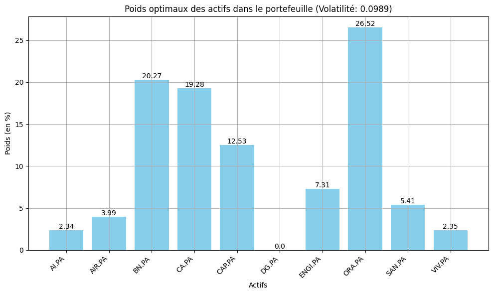
On constate que le portefeuille optimal est assez diversifié.Les trois principales entreipes representées sont :
- Télécommunications : Orange (26.53%)
- Banque et assurance : BNP Paribas (20.24%), Credit Agricole (19.27%)
- Technologie : Capgemini (12.52%)
- Énergie : Engie (7.30%)
I.2. Suivi du porte feuille
Dans cette section on va determiner l’AUM du portefeuille, suivre ses performances, sa volatilité et ses performances relatives par rapport au CAC40.
Nous effectuerons également un stress test sur le portefeuille pour ebaluer sa sensibilité relative à la période COVID.
I.2.1. AUM : Asset under management
Elle représente la valeur du porte feuille et est déterminée par la formule suivante:
\[ AUM = NAV \times Nombre\_de\_ parts\]
Où :
La Net Value Asset (NAV) représente la valeur nette d’une part du fonds (portefeuille) à un moment donné.
| AUM | |
|---|---|
| Date | |
| 2023-03-17 | 49.072210 |
| 2023-03-20 | 49.385646 |
| 2023-03-21 | 50.082627 |
| 2023-03-22 | 49.939924 |
| 2023-03-23 | 50.207381 |
| AUM | |
|---|---|
| count | 509.000000 |
| mean | 55.279277 |
| std | 3.155878 |
| min | 49.072210 |
| 25% | 52.209768 |
| 50% | 55.565887 |
| 75% | 57.952391 |
| max | 61.103480 |
Sur notre période d’etude, l’AUM en moyenne est de 59.10, et oscille entre 50.68 et 66.84.
I.2.2 Performance du portefeuille
Dans le cadre du suivi de notre portfeuille, il est important d’identifier et de mesurer les risques auxquels il est exposé afin de mieux les encadrer. Dans cette section nous intéressons tout particulièrement au risque de marché. Ce risque peut être évalué à l’aide de:
- La tracking error
- La volatilité
- La VaR
qui sont des mesures ex-ante.
# Performance du portefeuille
portfolio['perf'] = portfolio['AUM'].pct_change()
portfolio.dropna(inplace=True)
# Performance du benchmark
cac40_df = cac40['Close']
cac40_df ['perf'] = cac40_df.pct_change()
cac40_df.dropna(inplace=True)
print("Rendement annualisé du fond: \t", (1+portfolio.perf.mean())**252 - 1)
print("Rendement annualisé du CAC40: \t", (1+cac40_df.perf.mean())**252 - 1)
print("Performance relative du fond: \t", (1+portfolio.perf.mean())**252 - (1+cac40_df.perf.mean())**252 )Rendement annualisé du fond: 0.08241212298835676
Rendement annualisé du CAC40: 0.08502178188176579
Performance relative du fond: -0.002609658893409028La performance absolue du fonds est de 8.24%, tandis que celle du CAC40 est de 8.50%. Pour évaluer la performance relative du fonds par rapport à son indice de référence, on calcule l’écart de performance : -0.256%. Cela signifie que le portefeuille sous-performe par rapport à son benchmark.
I.2.2.1 Tracking error
La Tracking Error (TE) mesure l’écart de performance entre un fonds et son indice de référence (benchmark). Elle est définie comme l’écart-type des différences de rendement entre le fonds et le benchmark sur une période donnée. Plus la Tracking Error est faible, plus le fonds suit fidèlement son indice de référence.
\[ TE = \sqrt{\frac{\sum_1^n (r_{fond} - r_{benchmark})^2}{n-1}} \]
np.float64(0.108554084601567)Il ressort que la dispersion des rendements du fond par rapport ceux de son indice de reférence est de 10.8% en moyenne.
I.2.2.2 Volatilité
Afin d’evaluer le risque de marché du fond, la volatilité complète l’information apportée par la tracking error et permet de se faire une idée sur la regularité et la dispersion des rendements du fond sur la periode d’étude. Il s’agit de l’écart-type des performances absolues du fond.
AUM 49.955706
perf 0.131453
benchmark 0.128884
tracking_error 0.108554
dtype: float64Ticker
^FCHI 5304.018890
perf 0.128884
dtype: float64Le portefeuille suivi a une volatilité annualisé de 13.13% qui est du même ordre de grandeur que celui de son benchmark (CAC40) dont la volatilité est de 12.89%.
I.2.2.3 Value at risk
La value-at-risk (VaR) est une mesure très répendue en gestion de risques. Elle permet d’evaluer les pertes extrêmes encourrues sur un portefeuille sur un horizon donné sous un niveau de confiance. Elle est généralement calculée sur un horizon 1 jour. Pour obtenir une VaR sur un horizon (H) plus grand, on utilise la méthode de scaling qui consiste à multpiplier la VaR 1 jour par la racine carrée de H.
Elle est donnée par \(\mathbf{P}(P \& L < VaR_H) = \alpha\)
La VaR est déterminée à l’aide diverses approches: - Approche historique: Elle consiste à calculer le quantile empirique d’ordre \(\alpha\) des pertes historiques. C’est l’approche la plus utilisée en pratique. Cette méthode présente toutefois des limites en cas de changement soudain et inhabituel de conjoncture (crise etc.)
- Approche paramétrique: Ici on fait l’hypothèse que les P&L sont distribués suivant un loi dont les paramètres sont calibrés sur les données historiques. Comme toute méthode paramétrique, elle peut conduire à des estimations très biaisées si la loi supposée n’est pas adaptée aux données
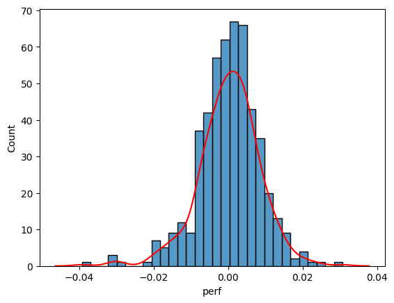
perf 5.195033
tracking_error 8.559272
dtype: float64On s’interesse aux VaR sur un horizon de 20 jours
(a) VaR historique
la VaR P&L à 99% d'horizon 20 jours est : -0.09706264496896261
la VaR Relative à 99% d'horizon 20 jours est : -0.0894502286993522C:\Users\DEBA\AppData\Local\Temp\ipykernel_17548\764873701.py:2: FutureWarning: Series.__getitem__ treating keys as positions is deprecated. In a future version, integer keys will always be treated as labels (consistent with DataFrame behavior). To access a value by position, use `ser.iloc[pos]`
print("la VaR P&L à 99% d'horizon 20 jours est :",VaR[1])
C:\Users\DEBA\AppData\Local\Temp\ipykernel_17548\764873701.py:3: FutureWarning: Series.__getitem__ treating keys as positions is deprecated. In a future version, integer keys will always be treated as labels (consistent with DataFrame behavior). To access a value by position, use `ser.iloc[pos]`
print("la VaR Relative à 99% d'horizon 20 jours est :",VaR[3])La perte maximale attendue sur un horizon de 20 jours avec un niveau de confiance de 99% est de 9.66%. Le porte feuille a 99% de chance de sous performer son indice de reference de 8.96% sur un horizon de 20 jours.
(b) VaR paramétrique
la VaR P&L à 99% d'horizon 20 jours est : -0.08474528009833775
la VaR Relative à 99% d'horizon 20 jours est : -0.07118630224564308C:\Users\DEBA\AppData\Local\Temp\ipykernel_17548\937860044.py:2: FutureWarning: Series.__getitem__ treating keys as positions is deprecated. In a future version, integer keys will always be treated as labels (consistent with DataFrame behavior). To access a value by position, use `ser.iloc[pos]`
print("la VaR P&L à 99% d'horizon 20 jours est :",VaR[1])
C:\Users\DEBA\AppData\Local\Temp\ipykernel_17548\937860044.py:3: FutureWarning: Series.__getitem__ treating keys as positions is deprecated. In a future version, integer keys will always be treated as labels (consistent with DataFrame behavior). To access a value by position, use `ser.iloc[pos]`
print("la VaR Relative à 99% d'horizon 20 jours est :",VaR[3])La perte maximale attendue sur un horizon de 20 jours avec un niveau de confiance de 99% est de 8.47%. Le porte feuille a 99% de chance de sous performer son indice de reference de 7.10% sur un horizon de 20 jours.
On observe que les VaR paramétriques sont strictement inférieures aux VaR historiques. Ceci pourrait s’expliquer par le fait que les données ont des queues plus lourdes que la loi normale comme l’illustre le graphique présenté plus haut. De plus l’excess de kurtosis confirme cette observation. Par conséquent, la VaR obtenue sous une paramétrisation gaussienne sous-estime la perte maximale encourrue sur le portefeuille.
Stress test
Le stress test ou test de résistance est un exercice qui consiste à reproduire des scénarios extrêmes sur un portefeuille afin d’évaluer sa résilience en conjoncture défavorable. On distingue notamment deux types de stress test: - Le stress test historique qui vise à reproduire des scénarios de crises historisques, - Le stress test hypothétique qui consiste à considérer des scénarios théoriques extrêmes.
Nous allons dans la suite implémenter un stress test historique en reproduisant le choc COVID entre 19/02/2020 et 19/03/2020. Il s’agit s’agira de calculer la performance du fonds entre ces deux date et de la comparer à celle de son indice de référence.
# Données des actions en période covid
stress_date_1 = "2020-02-19"
stress_date_2 = "2020-03-19"
tickers = ['SAN.PA', 'BN.PA', 'AIR.PA', 'AI.PA', 'ORA.PA', 'CAP.PA', 'VIV.PA', 'CA.PA', 'ENGI.PA', 'DG.PA']
df_stress = yf.download(tickers, start = stress_date_1, end=stress_date_2)['Close']
cac40_stress = yf.download('^FCHI', start = stress_date_1, end=stress_date_2)['Close'][*********************100%***********************] 10 of 10 completed
[*********************100%***********************] 1 of 1 completedAUM -0.335673
dtype: float64Ticker
^FCHI -0.385585
dtype: float64Le fonds stressé a une performance absolue de -33.69% contre -38.55% pour son benchmark. Ces performances en période de crise COVID sont du même ordre de grandeur. Toutefois, la perte enregistrée sur le fonds est moins importante. Une analyse des performances des actions constituant le fonds montre que la sous-performance enegistrée est essentiellement portée par: Air Liquide, Capgenie et Engie.
# Rendement du portefeuille en période de covid
df_stress.iloc[-1,] /df_stress.iloc[0,] - 1
plt.figure(figsize=(10, 6))
bars = plt.bar(df_close.columns.tolist(), df_stress.iloc[-1,] /df_stress.iloc[0,] - 1, color='skyblue')
plt.title(f"Performance de la composition du fond stressé")
plt.xlabel("Actifs")
plt.ylabel("Performance (%)")
plt.xticks(rotation=45, ha='right')
plt.grid(True)
# Ajout des étiquettes sur chaque barre
for bar, weight in zip(bars, df_stress.iloc[-1,] /df_stress.iloc[0,] - 1):
plt.text(bar.get_x() + bar.get_width() / 2, bar.get_height(),
f'{round(weight*100, 2)}', ha='center', va='bottom', fontsize=10)
plt.tight_layout()
plt.show()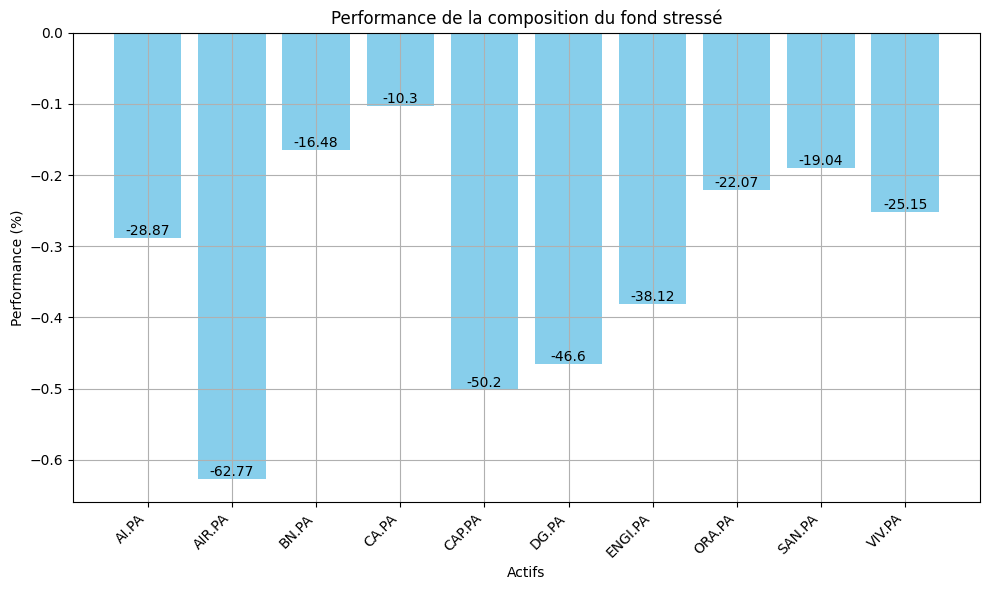
Cadre de suivi de la liquidité
Le suivi de la liquidité est d’une importance centrale en gestion de fonds et est encadré par des exigences règlementaires. Il s’agit entre autres pour le gestionnaire de pouvoir honorer ses engagements vis-à-vis de des investisseurs en cas de rachat de parts du fonds. Il faut donc s’assurer de la capacité à revendre les actifs composant le fonds dans des délais courts sans toutefois les brader.
C’est ce qu’on appelle le risque de liquidité qui se défini plus formellement comme étant la facilité avec laquelle une entreprise peut échanger ses actifs contre du cash, même en situation soudaine de besoin de liquidité, sans subir de coûts anormaux par rapport aux autres acteurs du marché.
Le suivi de la liquidité d’un fonds s’effectue par le calcul de son profil d’écoulement en condition normale et en condition stressée.
La méthodologie de calcul d’un profil d’écoulement
Le fonds est constitué de n actifs en quantité \(Q_i\) chacun à liquider. Dans la pratique il existe une quantité maximale au delà de laquelle les échanges ne peuvent se faire sans subir de coûts anormaux: c’est la profondeur de marché. Le coût de liquidation est induit par les volume d’ordre émis.
La profondeur de marché est généralement estimée en examinant: - Les carnets d’ordres ou - Les volumes quotidiens échangés: On considère notamment le volume quotidien moyen échangé sur 3 mois appelé ADV ou ATV (Average Daily/Traded Volume). La profondeur de marché est alors estimée par \(Q^* = 20\% \times ADV_{3 mois}\)
On distingue quatre profils d’écoulement: - En codition normale: avec et sans déformation - En condition stressée: avec déformation et sans déformation
Dans une liquidation avec déformation, les actifs les plus liquides sont liquidés en premiers. La déformation du portefeuille s’illustre par les changements de poids des différents émetteurs dans le fonds. La liquidation sans déformation quant à elle consistera à liquider le fonds au rythme de l’actif le moins liquide afin de préserver les poids initiaux.
N.B: Le profil de liquidation est représenté en proportion du portefeuille initial.
On utilise le profil de liquidité pour déterminer la taille optimal du fonds permettant de respecter les exigence de minimum de liquidité. Il s’agira de s’assurer que plus de 90% du fonds est liquidé en deux jours, laissant ainsi un maximum de 10 % dans la catégorie dite “poubelle” (c’est-à-dire les actifs moins liquides).
En condition stressée avec déformation: On se place dans une situation dans laquelle la profondeur de marché est réduite à la suite d’un choc conduisant à un assèchement du marché.
def liqudity(df_volume, ADV_rate=0.2, weight_adjust=1, label="Conditions normales avec déformation", seed = 42):
"""
Fonction de calcul de la liquidité d'un portefeuille sur plusieurs jours.
Paramètres :
-----------
df_volume : DataFrame
DataFrame contenant les volumes quotidiens pour chaque actif (tickers).
ADV_rate : float, optionnel
Taux de liquidité journalière exprimé en pourcentage de l'ADV (par défaut 0.2, soit 20%).
weight_adjust : float, optionnel
Facteur de pondération pour ajuster la quantité générée aléatoirement (par défaut 1).
label : str, optionnel
Label pour décrire le scénario de liquidation (par défaut "Conditions normales avec déformation").
Retourne :
---------
portfolio_liquidity : DataFrame
DataFrame contenant les informations suivantes pour chaque actif :
- 'Ticker' : Le symbole de l'actif.
- 'ADV' : Le volume moyen quotidien calculé sur une fenêtre de 60 jours.
- 'Prix' : Le prix actuel de l'actif (extrait de df_close).
- 'QUANTITE' : La quantité totale simulée de l'actif détenu par le portefeuille.
- 'QUANTITE LIQUIDABLE' : La quantité qui peut être liquidée quotidiennement (ADV_rate * ADV).
- 'NB_JOURS DE LIQUIDATION' : Nombre de jours estimés pour liquider entièrement l'actif.
- 'JOUR X' (où X est un numéro de jour) : Quantité restante après chaque jour de liquidation.
- 'POIDS X' : Poids relatif de chaque actif dans le portefeuille après chaque jour de liquidation.
Description :
-------------
1. Calcul de l'Average Daily Volume (ADV) sur une fenêtre de 60 jours.
2. Création d'un DataFrame contenant les informations de liquidité de chaque actif.
3. Génération de quantités d'actifs aléatoires pour simuler un portefeuille.
4. Calcul de la quantité liquidable par jour (20 % de l'ADV par défaut).
5. Simulation de la liquidation progressive de chaque actif jour par jour jusqu'à épuisement.
6. Calcul des poids du portefeuille après chaque jour de liquidation.
"""
# Calcul de la moyenne mobile sur 60 jours du volume de transactions (ADV : Average Daily Volume)
ADV = df_volume.rolling(window=60).mean()
# Extraction de l'ADV le plus récent pour chaque ticker
latest_ADV = ADV.iloc[-1,]
# Création d'un DataFrame contenant l'ADV, le prix actuel et d'autres informations pour chaque actif
portfolio_liquidity = pd.DataFrame({'Ticker': tickers, 'ADV': latest_ADV.values, 'Prix': df_close.iloc[-1,].values})
# On définit la colonne 'Ticker' comme index pour faciliter l'accès aux données
portfolio_liquidity = portfolio_liquidity.set_index('Ticker')
# Génération de quantités d'actifs simulées basées sur l'ADV
np.random.seed(seed) # Pour des résultats reproductibles
portfolio_liquidity['QUANTITE'] = weight_adjust * 1.5 * np.random.uniform(0, 1, 10) * portfolio_liquidity['ADV']
# Calcul de la quantité liquidable : 20 % de l'ADV (peut être ajusté via 'ADV_rate')
portfolio_liquidity['QUANTITE LIQUIDABLE'] = ADV_rate * portfolio_liquidity['ADV']
# Calcul du nombre de jours nécessaires pour liquider chaque actif
portfolio_liquidity['NB_JOURS DE LIQUIDATION'] = np.ceil(
portfolio_liquidity['QUANTITE'] / portfolio_liquidity['QUANTITE LIQUIDABLE']
)
# Initialisation pour le jour 0
i = 1
portfolio_liquidity[f'POIDS {0}'] = portfolio_liquidity['QUANTITE'] * portfolio_liquidity['Prix']
portfolio_liquidity[f'POIDS {0}'] = portfolio_liquidity[f'POIDS {0}'] / portfolio_liquidity[f'POIDS {0}'].sum()
# Calcul de la quantité restante après le premier jour de liquidation
portfolio_liquidity[f'JOUR {i}'] = portfolio_liquidity['QUANTITE'] - portfolio_liquidity['QUANTITE'].clip(upper=portfolio_liquidity['QUANTITE LIQUIDABLE'])
portfolio_liquidity[f'POIDS {i}'] = portfolio_liquidity[f'JOUR {i}'] * portfolio_liquidity['Prix']
portfolio_liquidity[f'POIDS {i}'] = portfolio_liquidity[f'POIDS {i}'] / portfolio_liquidity[f'POIDS {i}'].sum()
# Calcul itératif jusqu'à liquidation complète
while portfolio_liquidity[f'JOUR {i}'].max() > 0:
i += 1
# Calcul de la quantité restante après chaque jour supplémentaire
portfolio_liquidity[f'JOUR {i}'] = (
portfolio_liquidity[f'JOUR {i-1}'] - portfolio_liquidity[f'JOUR {i-1}'].clip(upper=portfolio_liquidity['QUANTITE LIQUIDABLE'])
).clip(lower=0)
# Mise à jour des poids du portefeuille pour ce jour
portfolio_liquidity[f'POIDS {i}'] = portfolio_liquidity[f'JOUR {i}'] * portfolio_liquidity['Prix']
portfolio_liquidity[f'POIDS {i}'] = portfolio_liquidity[f'POIDS {i}'] / portfolio_liquidity[f'POIDS {i}'].sum()
return portfolio_liquiditydef liquidity_profile(portfolio_liquidity, label="Profil d'écoulement en conditions normales avec déformation"):
"""
Fonction qui génère un profil de liquidité d'un portefeuille en fonction du nombre de jours nécessaires pour liquider tous les actifs.
Paramètres :
-----------
portfolio_liquidity : DataFrame
Le DataFrame généré par la fonction liqudity() contenant les quantités restantes par jour pour chaque actif.
label : str, optionnel
Titre du graphique affiché (par défaut "Profil de liquidité en conditions normales avec déformation").
Description :
-------------
1. Calcule la quantité restante d'actifs pour chaque jour jusqu'à liquidation totale.
2. Calcule le profil de liquidité en pourcentage du portefeuille initial liquidé au fil du temps.
3. Génère deux graphiques :
- Profil de liquidité en pourcentage du portefeuille initial.
- Évolution des poids des actifs au fil des jours.
Retourne :
---------
Affiche deux graphiques côte à côte montrant la liquidation progressive et l'évolution des poids.
"""
# Calculer le profil de liquidité
liquidity_profile = [portfolio_liquidity['QUANTITE']]
for i in range(1, int(portfolio_liquidity['NB_JOURS DE LIQUIDATION'].max()) + 1):
liquidity_profile.append(portfolio_liquidity[f'JOUR {i}'])
liquidity_profile = pd.DataFrame(liquidity_profile)
# Calculer le profil en pourcentage de liquidité restante
profile = liquidity_profile @ portfolio_liquidity['Prix']
portefeuille_valeur = profile['QUANTITE'] # Récupérer la valeur du portefeuille
profile = 100 - profile[1:,] * 100 / portefeuille_valeur
# Créer une figure avec deux sous-graphiques côte à côte
fig, axes = plt.subplots(1, 2, figsize=(16, 6))
# Premier graphique : Profil de liquidité
ax1 = axes[0]
profile.plot(ax=ax1, marker='o', legend=False, color='blue')
barplot = profile.plot(kind='bar', ax=ax1, color='skyblue', edgecolor='black', alpha=0.5)
# Affichage des valeurs sur les barres
for bar in barplot.patches:
value = round(bar.get_height(), 2)
ax1.text(bar.get_x() + bar.get_width() / 2, bar.get_height() + 0.5, f"{value}",
ha='center', va='bottom', fontsize=10, color='black')
ax1.set_title(f"{label}", fontsize=14)
ax1.set_xlabel("Jours", fontsize=12)
ax1.set_ylabel("Liquidité du portefeuille (%)", fontsize=12)
ax1.grid(axis='y', linestyle='--', alpha=0.7)
# Étiquette de valeur du portefeuille
ax1.text(0.95, 0.05, f"Valeur portefeuille : {round(portefeuille_valeur)} euros",
transform=ax1.transAxes, fontsize=12, color='red', ha='right', va='bottom',
bbox=dict(boxstyle="round", facecolor="white", edgecolor="red"))
# Deuxième graphique : Évolution des poids
ax2 = axes[1]
for i in range(int(portfolio_liquidity['NB_JOURS DE LIQUIDATION'].max()) + 1):
if f'POIDS {i}' in portfolio_liquidity.columns:
ax2.plot(portfolio_liquidity[f'POIDS {i}'], label=f'Jour {i}')
else:
print(f"Colonne 'POIDS {i}' non trouvée.")
ax2.set_title("Évolution des Poids au Fil des Jours", fontsize=14)
ax2.set_xlabel("Index", fontsize=12)
ax2.set_ylabel("Poids", fontsize=12)
ax2.legend()
ax2.grid(axis='y', linestyle='--', alpha=0.7)
# Ajustement de l'affichage
plt.tight_layout()
plt.show()Profil d’écoulement avec déformation
Profil d’écoulement en conditions normales avec déformation
Le portefeuille étudié est liquidable en 8 jours au minimum. Au premier jour seul 23.17% du portefeuille est liquidable et atteint les 73.54% au 4eme jour. On observe que les poids des actifs composant le portefeuille sont déformés au fil des jours. Il y a alors une concentration du portefeuille sur les actifs les moins liquides. Cette situation est domageable pour les investisseurs restant dans le fonds, car il faudra plus de temps pour honorer les engagements du fonds vis-à-vis d’eux en cas de rachat ce qui augmente leur exposition au risque de liquidité..
Afin de protéger ces investisseurs, le régulateur impose aux gérants de fonds de fixer des GATES qui doivent obligatoirement être présentés dans leurs prospectus. Cela consiste à donner une option au gérant pour restreindre les rachats quotidien, à 5% du fonds par exemple.
Profil d’écoulement en conditions stressée avec déformation
En conjoncture défavorable, la profondeur de marché est réduite ce qui entraîne un contraction des volumes liquidables. Nous simulons un tel choc en réduisant la profondeur de marché à 10% l’ADV.
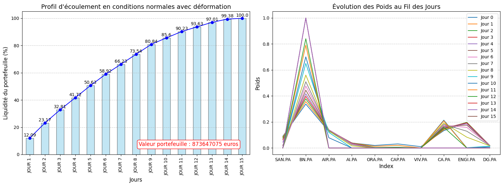
La contraction de la profondeur de marché rallonge la durée minimale de liquidation du fonds à 15 jours contre 8 jours initialement. Ceci illustre bien l’exposition du fonds au risque de liquidité. Il devient donc indispensable pour le gérant du fonds de déterminer une taille optimale de celui-ci afin de réduire son exposition au risque de liquidité.
Taille optimale du portefeuille
On peut ajuster la taille du portefeuille en faisant varier le paramètre weight_adjust de la fonction liqudity afin de déterminer la taille optimale du fonds liquidable en 1 jour.
Pour le cas étudié, le fonds optimal a une valeur de 123 184 238 euros dont 99.82% est liquidable en 1 jour.
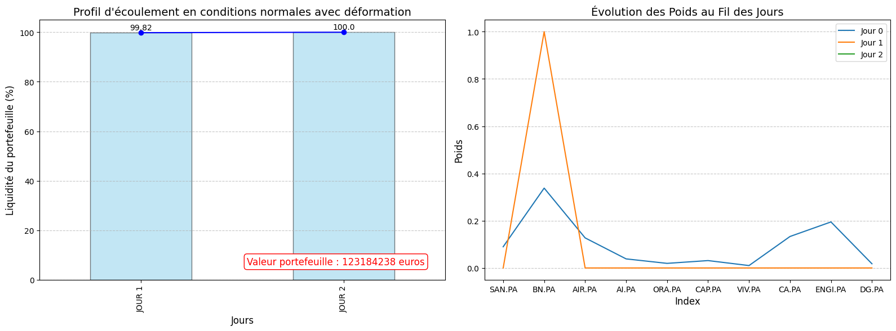
En repétant le scénario défavorable d’un choc qui réduit la profondeur de marché à 10% l’ADV, le fonds optimal ainsi constitué est liquidable à 99.82% en deux jours. Il est donc plus résilient.
Profil d’écoulement sans déformation
Rappelons qu’une politique de gestion sans déformation consiste à appliquer des rachats proformat. Ceci garantisse une stabilité de la composition du fonds.
def liqudity_proformat(df_volume, ADV_rate = 0.2, weight_adjust = 1):
"""
Fonction qui génère un DataFrame décrivant la liquidité d'un portefeuille sur plusieurs jours, en fonction de la quantité disponible par jour et des poids correspondants.
Paramètres :
-----------
df_volume : DataFrame
Un DataFrame contenant les volumes quotidiens de chaque ticker.
ADV_rate : float, optionnel
Le pourcentage d'Average Daily Volume (ADV) disponible chaque jour pour être liquidé (par défaut : 0.2, soit 20 %).
weight_adjust : float, optionnel
Facteur d'ajustement appliqué pour moduler la quantité calculée (par défaut : 1).
Description :
-------------
1. Calcule l'ADV (volume moyen sur 60 jours) pour chaque actif.
2. Génère un DataFrame contenant l'ADV, les prix actuels, les quantités à liquider, et les quantités liquidables par jour.
3. Calcule le nombre de jours nécessaire pour liquider complètement chaque actif.
4. Produit une série de DataFrames pour chaque jour, montrant la quantité restante, les poids associés, et les vitesses de liquidation.
Retourne :
---------
portfolio_liquidity : DataFrame
Un DataFrame contenant les informations de liquidité du portefeuille sur plusieurs jours.
"""
# Calcul de la moyenne mobile du volume (ADV) sur une fenêtre de 60 jours
ADV = df_volume.rolling(window=60).mean()
# Extraction de la dernière ligne (les valeurs ADV les plus récentes)
latest_ADV = ADV.iloc[-1,]
# Création d'un DataFrame pour la liquidité du portefeuille
portfolio_liquidity = pd.DataFrame({'Ticker': tickers, 'ADV': latest_ADV.values, 'Prix': df_close.iloc[-1,].values})
# Définir 'Ticker' comme index pour un accès plus facile
portfolio_liquidity = portfolio_liquidity.set_index('Ticker')
# Calcul de la quantité (QUANTITE) basée sur le volume le plus récent
np.random.seed(42)
portfolio_liquidity['QUANTITE'] = weight_adjust * 1.5 * np.random.uniform(0, 1, 10) * portfolio_liquidity['ADV']
# Calcul de la quantité liquidable par jour
portfolio_liquidity['QUANTITE LIQUIDABLE'] = ADV_rate * portfolio_liquidity['ADV']
# Calcul du nombre de jours de liquidation nécessaire
portfolio_liquidity['NB_JOURS DE LIQUIDATION'] = np.ceil(portfolio_liquidity['QUANTITE'] / portfolio_liquidity['QUANTITE LIQUIDABLE'])
i = 1
# Initialisation du premier jour
portfolio_liquidity[f'POIDS {0}'] = portfolio_liquidity['QUANTITE'] * portfolio_liquidity['Prix']
portfolio_liquidity[f'POIDS {0}'] = portfolio_liquidity[f'POIDS {0}'] / portfolio_liquidity[f'POIDS {0}'].sum()
portfolio_liquidity[f'JOUR {i}'] = portfolio_liquidity['QUANTITE'] - portfolio_liquidity['QUANTITE'].clip(upper=portfolio_liquidity['QUANTITE LIQUIDABLE'])
portfolio_liquidity[f'POIDS {i}'] = portfolio_liquidity[f'JOUR {i}'] * portfolio_liquidity['Prix']
portfolio_liquidity[f'POIDS {i}'] = portfolio_liquidity[f'POIDS {i}'] / portfolio_liquidity[f'POIDS {i}'].sum()
portfolio_liquidity[f'SPEED {i}'] = portfolio_liquidity['QUANTITE'].clip(upper=portfolio_liquidity['QUANTITE LIQUIDABLE']) / portfolio_liquidity['QUANTITE']
while portfolio_liquidity[f'JOUR {i}'].max() > 0:
i += 1
portfolio_liquidity[f'JOUR {i}'] = (
(portfolio_liquidity[f'JOUR {i-1}'] - portfolio_liquidity[f'JOUR {i-1}'] * portfolio_liquidity[f'SPEED {i-1}'].min())
).clip(lower=0)
portfolio_liquidity[f'POIDS {i}'] = portfolio_liquidity[f'JOUR {i}'] * portfolio_liquidity['Prix']
portfolio_liquidity[f'POIDS {i}'] = portfolio_liquidity[f'POIDS {i}'] / portfolio_liquidity[f'POIDS {i}'].sum()
portfolio_liquidity[f'SPEED {i}'] = portfolio_liquidity[f'JOUR {i}'].clip(upper=portfolio_liquidity['QUANTITE LIQUIDABLE']) / portfolio_liquidity[f'JOUR {i}']
return portfolio_liquidityProfil d’écoulement en conditions normales sans déformation
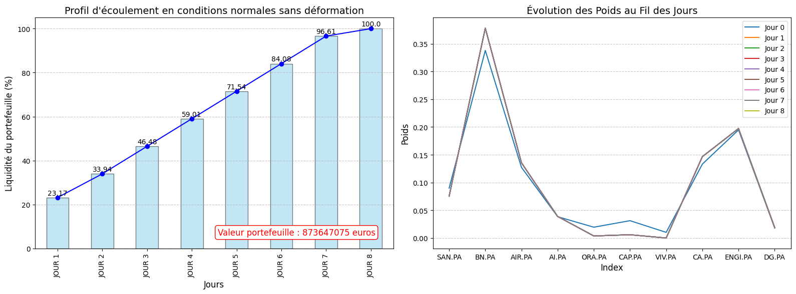
Les actions étant liquidées à la vitesse d’écoulement de l’action la moins liquide, il apparaît clairement qu’à l’inverse d’un écoulement avec déformation la quantité liquidable évolue plus lentement. On a par exemple 59.01% du fonds liquidable en 4 jours contre 73.54% pour un écoulement avec déformation.
Par ailleurs on constate bien que les poids des actions restent stables au fil des jours, sauf au dernier jour où la totalité du fonds est liquidée. Une implication immédiate de cette stabilité est qu’il n’y a pas de concentration du risque de liquidité sur des actifs les moins liquides du fonds.
Profil d’écoulement en conditions stressée sans déformation
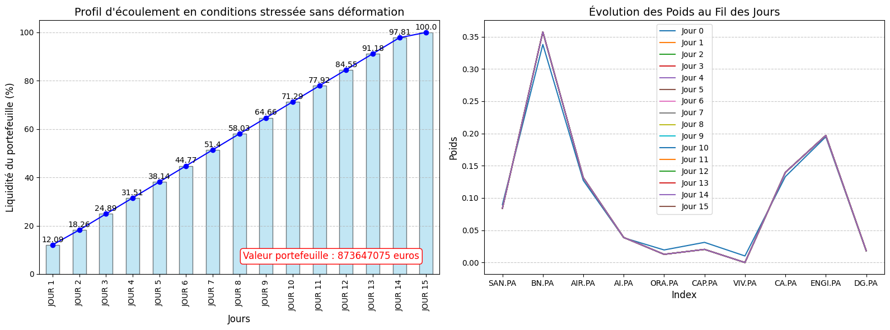
Un choc sur la profondeur de marché a pour effet un rallongement de la durée minimale de liquidation du fonds. Toutefois, les poids restent bien stables.
Risque de crédit et risque de taux
Le risque de crédit est le risque de perte engendrée par la defaillance d’une partie prenante à remplir ses engagements contractuels préalablement établis. C’est principal risque observé sur périmètre du retail.
On définit le taux d’intérêt comme le loyer de l’argent (annualisé dans la pratique).
Cette définition est celle historique car très intuitive. Il peut cependant s’averer que les taux d’interêt soient négatifs. Là cette definition devient donc limitée.
Depéndamment de ce qu’on fait de son argent, le thésauriser, le prêter à la banque , ou encore à l’etat, il existe toujours un risque de perte qui subsiste. Il peut donc advenir, que dans le souci de sécuriser son argent, dans un contexte particulier (notamment incertain), le posseusseur soit disposé à payer pour securiser son argent : on parle de taux d’intérêt négatif.
Cela illustre la métaphore du loyer du coffre fort.
Généralités sur le pricing d’obligations
CONTEXTE
En raison des obligations réglementaires auxquelles les banques sont soumises, elles ne peuvent pas prêter à toutes les entreprises ayant besoin de financement. C’est dans ce contexte que la notion d’obligation prend son sens. La banque agit alors en tant qu’intermédiaire entre l’entreprise et le marché, et perçoit des frais de commission. le marché prête un montant M à l’entreprise et reçoit des annuités et le nominal à maturité.
Une obligation est, économiquement, un prêt-emprunt.
VALORISATION D’UNE OBLIGATION
De manière générale, la valorisation d’un actif est l’espérance des flux actualisés au taux sans risque sous la probabilité risque neutre.
\[\begin{align} X_0 &= E[e^{-rT}X_T] &= e^{-rT}c\times PS(T) \end{align}\]
N.B: Taux de recouvrement historique est de 40%. Le recouvrement s’applique uniquement au nominal.
La probabilité de survie PS est généralement déterminée à partir du modèle à intensité de Poisson via la relation \[PS(T) = e^{-\lambda T}\]
Considérons une obligation d’échéances \(T_i\), \(i=1,...,n\), de coupon \(c\) et de nominal \(N\). Les coupons et le nominal sont payés en cas de survie et le recouvrement en cas de défaut.
La valeur de cette obligation à la date t vaut:
\[\begin{align} C_t = \sum_{i=1}^{n} c \times e^{-(\lambda+r)(T_i-t)} \mathbf{1}_{T_i \geq t} \end{align}\]
La probabilité de survenu du défaut à une date t vaut
\[\begin{align} PD(t) &= PS(t) - PS(t+dt) &= - \frac{PS(t+dt)- PS(t)}{dt} dt &= - \frac{dPS(t)}{dt} dt &= \lambda e^{-\lambda t}dt \end{align}\]
\[\begin{align} \mathcal{R}_0 &= \int_0^T R(\lambda e^{-\lambda t}) e^{-rt}dt &= \lambda R \frac{1 - e^{-(r+\lambda)T}}{r+\lambda} \end{align}\]
\[\begin{align} \mathcal{R}_t &= \int_t^T R(\lambda e^{-\lambda u}) e^{-ru}du &= \lambda R \times e^{(r+\lambda)t} \frac{1 - e^{-(r+\lambda)T}}{r+\lambda} \mathbf{1}_{T \geq t} \end{align}\]
\[\begin{align} B_t &= \sum_{i=1}^{n} c \times e^{-(\lambda+r)(T_i-t)} \mathbf{1}_{T_i \geq t} + \left(e^{-(r+\lambda)(T_n - t)} + \lambda R \times e^{(r+\lambda)t} \frac{1 - e^{-(r+\lambda)T_n}}{r+\lambda} \right) \mathbf{1}_{T_n \geq t} \end{align}\]
Impementation de la valorisation d’un bond
# Impementation de la fonctiuon de valorisation d'un bond
import numpy as np
def Bond(t,c,T,r,lamda, R = 0.4):
B = 0
for T_i in range(1,T+1):
B += np.exp(-(lamda + r)*(T_i - t))*(T_i>=t)
B *= c
B += (np.exp(-(r + lamda)*(T_i-t)) + lamda * R * (1-(np.exp(-(r + lamda)*(T_i -t)))) / (r + lamda))*(T_i>=t)
return Bnp.float64(0.9981933497987289)Avec les paramètres ci-dessus considérés, on remarque que le prix de l’obligation est proche du nominal. En effet, le taux coupon est égal au taux de marché, ce qui indique que l’obligation est remunérée au taux du marché. Il s’agit donc d’une obligation au pair.
Au cas où on aurait proposé une remunération supérieure à celle du marché, elle serait beaucoup plus attractive et sa valeur se serait appréciée. l’illustration est donnée ci dessous pour c= 0.03
Avec une remunération inférieure à ce qu’aurait proposé le marché, on obtient une valorisation de l’obligation inférieure au nomimal
Etant donné une intensité de défaut supérieure à zéro, on peut également calculer le coupon pour lequel l’obligation est au pair. On obtient, après calculs prsentés ci-dessous, un taux coupon de 2.6%.
# Recherche du coupon pour émettre une obligation au pair.
def dichot(t,T,r,lamda, P_MKT):
c_inf = 1e-8
c_sup = 1
epsi = 1e-8
c_moy = (c_inf + c_sup)/2
error = c_sup - c_inf
while error>epsi:
p_hw = Bond(t,c_moy,T,r,lamda)
if p_hw > P_MKT:
c_sup = c_moy
elif p_hw < P_MKT:
c_inf = c_moy
c_moy = (c_inf + c_sup)/2
error = np.abs(c_sup - c_inf)
return c_moy
0.026393926193952293En maintenant une remunération égale à celle du marché , avec une intensité de défaut très grande (de l’ordre de 1000%), l’obligation tombe presque instantannément en défaut. Dans cette situation, la valeur du coupon vaut alors 39.92% qui est sensiblement proche du taux de recouvrement (40%).
np.float64(0.39920293189432754)Évolution du prix de l’obligation en fonction du temps
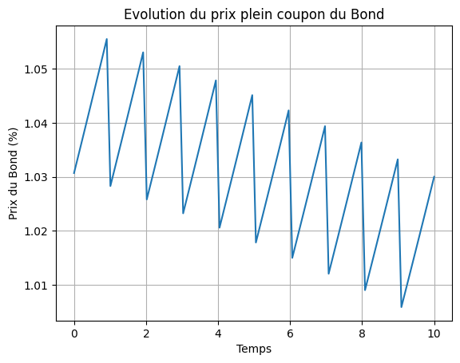
Plus on se rapproche de la date de détachement du coupon plus l’obligation devient attractive, elle prend donc de la valeur.
Chaque saut correspond à un détachement de coupons. une fois le coupon détaché de l’obligation, les flux à venir diminuent et la valeur de l’obligation se deprecie de la valeur du coupon qui a été détaché.
Ces sauts ne reflètent donc pas une dépréciation des bonds par le marché. Ce sont des sauts techniques. Raison pour laquelle on dit que le prix plein coupon est pollué par le coupon (en anglais Dirty price).
On va donc s’interesser par la suite au clean price ou pied de coupon qui correspond à au prix du bond moins le coupon couru.
\[\begin{align} \tilde{B}_t = B_t - cc \end{align}\] où cc: coupon couru : \[ cc = c \times(t-T^*) \] Avec \(T^*\) est la partie entière de t.
En retirant cette valeur de coupon couru, on supprime cet effet de saut après les detachements de coupons
# Pieds coupon
lamda = 0.01
r = 0.02
c = 0.03
T = 10
times = np.linspace(0,10, num = 100)
B_plein_coupon = np.array([Bond(t,c,T,r,lamda) for t in times])
B_pieds_coupon = np.array([CleanPrice(t,c,T,r,lamda) for t in times])
plt.plot(times,B_pieds_coupon, label ="Pieds coupon")
plt.plot(times,B_plein_coupon, label ="Plein coupon")
plt.xlabel("Temps")
plt.ylabel("Prix du Bond (%)")
plt.legend()
plt.title("Evolution du prix du Bond")Text(0.5, 1.0, 'Evolution du prix du Bond')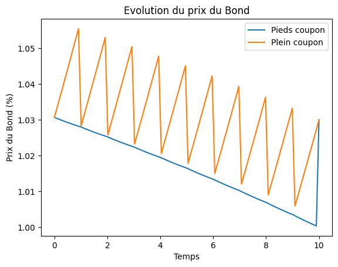
En retirant cette valeur de coupon couru, on supprime l’effet de saut après les detachements de coupons, et on observe une courbe sans discontinuités
lamda = 0.01
r = 0.02
c = 0.01
T = 10
times = np.linspace(0,10, num = 100)
B_plein_coupon1 = np.array([Bond(t,0.01,T,r,lamda) for t in times])
B_pieds_coupon1 = np.array([CleanPrice(t,0.01,T,r,lamda) for t in times])
B_plein_coupon5 = np.array([Bond(t,0.05,T,r,lamda) for t in times])
B_pieds_coupon5 = np.array([CleanPrice(t,0.05,T,r,lamda) for t in times])
plt.plot(times,B_pieds_coupon1, label ="Pieds coupon 1%")
plt.plot(times,B_plein_coupon1, label ="Plein coupon 1%")
plt.plot(times,B_pieds_coupon5, label ="Pieds coupon 5%")
plt.plot(times,B_plein_coupon5, label ="Plein coupon 5%")
plt.xlabel("Temps")
plt.ylabel("Prix du Bond (%)")
plt.legend()
plt.title("Evolution du prix du Bond")Text(0.5, 1.0, 'Evolution du prix du Bond')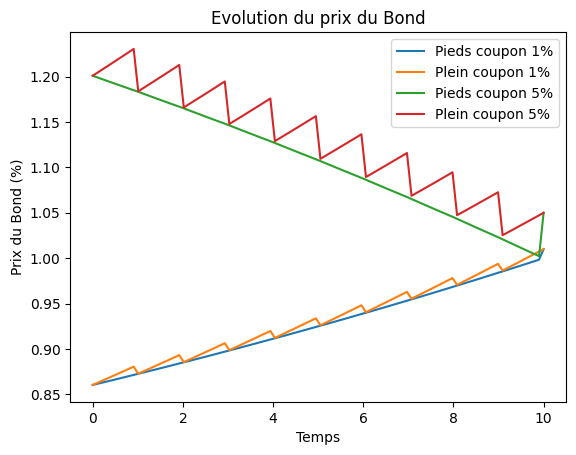
Les constats que l’on fait : - Lorsque c = 1% : La rémunération de l’obligation est inférieure à celle offerte par le marché. Ainsi, lors de son émission, sa valeur sera nécessairement inférieure à celle du pair, ce qui explique une valeur initiale proche de 87 %. À maturité, on reçoit 100 % du nominal, plus 1 % de ce dernier, correspondant au coupon. Le résultat final est donc sensiblement égal à 101 %.
- Lorsque c = 5% : L’obligation rémunère plus que ce que le marché offre, ce qui la rend particulièrement attractive dès son émission. Ainsi, sa valeur de départ sera d’environ 120 %. Au fur et à mesure que les obligations sont détachées, les flux futurs diminuent, ce qui entraîne une dépréciation de sa valeur. À maturité, on reçoit 100 % du nominal, plus 5 % du montant nominal, correspondant au coupon. Le résultat final est donc de 105 %.
Evolution du prix de l’obligation en fonction du taux d’intérêt
De l’expression analytique du prix du bond, on observe que le prix est décroissant du taux d’intérêt. La figure ci-dessous en donne une illustration, toute chose égale par ailleurs.
On vérifie graphiquement que le prix du bond est de 100% lorsque le taux d’intérêt est égal au taux sans risque \(r^* = c - \lambda (1 - R)\).
# Evolution du prix du bond en fonction du taux d'intérêt
lamda = 0.01
r = 0.02
c = 0.03
T = 10
R = 0.4
interest = np.linspace(0,0.10, num = 100)
B_plein_coupon = np.array([Bond(t,c,T,r,lamda) for r in interest])
plt.plot(interest,B_plein_coupon, label ="Plein coupon")
plt.axvline(x=(c - lamda*(1 - R) ), color='red', linestyle='--', label='Taux sans risque $r^* = c - \lambda (1 - R) $')
plt.xlabel("Taux d'intérêt (%)")
plt.ylabel("Prix du Bond (%)")
plt.legend()
plt.title("Evolution du prix du Bond en fonction du taux d'intérêt")Text(0.5, 1.0, "Evolution du prix du Bond en fonction du taux d'intérêt")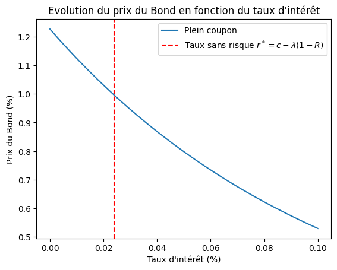
Notion de sensibilité
La sensibilité mesure la variation du prix du bond face à une variation d’un facteur de risque. On distingue entre autres la sensibilité de taux et la sensibilité de crédit.
Dans cette sectioin nous nous intéressons particulièrement à la sensibilité de taux. Elle est définie par la formule:
\[ Sensibilité = - \frac{dB_t}{dr} \frac{1}{B_t} \]
Interprétation: Lorsque le taux d’intérêt bouge de 1%, alors le prix du bond bouge de -sensibilité %.
Cette sensibilité peut également être vue comme le barycentre des différentes échéances pondérées par les flux actualisés. C’est la duration.
\[ \frac{\sum T_i\times F_i}{\sum F_i} \]
Exemple: En considérant une obligation de maturité 3 ans payant des coupons annuels, avec intensité de défaut nul. Alors son prix et la sensibilité de taux sont données par:
\[\begin{align} P &=& c \times e^{-1r} + c \times e^{-2r} + c \times e^{-3r} \end{align}\]
\[\begin{align} \frac{\partial P}{\partial r} &=& -1 c \times e^{-1r} -2 c \times e^{-2r} -3 c \times e^{-3r} \end{align}\]
\[\begin{align} Sensibilité &=& \frac{1 c \times e^{-1r} + 2 c \times e^{-2r} + 3 c \times e^{-3r}}{c \times e^{-1r} + c \times e^{-2r} + c \times e^{-3r}} \end{align}\] D’où l’expression barycentrique des échéances pondérées par les flux.
On considère un bond dont les caractérisiques sont les suivqantes:
\[ \begin{cases} \lambda = 0.01\\ r = 0.02\\ c = 0.03\\ T = 10\\ R = 0.4\\ \end{cases} \]
La sensiblité de ce bond est de 8.64. Ainsi, lorsque le taux d’intérêt augmente de 1 point de pourcentage, le prix du bond diminue de 8.64%.
np.float64(8.643982489105056)Evolution de la sensibilité de taux fonction de la maturité
# Evolution de la sensibilité au taux d'intérêt en fonction de la maturité
maturity = range(1,21)
censi = np.array([Sensi(t,c,T,r,lamda) for T in maturity])
plt.plot(maturity, censi, label ="Duration")
plt.xlabel("Maturité (année)")
plt.ylabel("Duration")
plt.legend()
plt.title("Sensibilité du prix du bond en fonction de la maturité")Text(0.5, 1.0, 'Sensibilité du prix du bond en fonction de la maturité')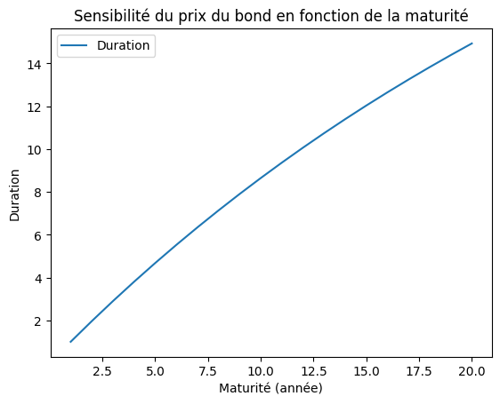
- On constate que la sensibilité de taux croît avec la maturité et tend à être linéaire.
- Pour des paramètres extrêmes \(c = \lambda = r = 0\), la sensibilité (duration) est identique à la maturité comme illustré sur la figure ci-dessous. Cette remarque met en évidence la relation mlathématique entre la sensibilité et la maturité présentée plus haut.
- Connaissant la maturité, pour une variation du taux d’intérêt on peut donc donner une estimation “grossière” de la sensibilité (en approximant la duration par 0.8*maturité, par exemple).
# Valeur extrême de la sensibilité (cas extrême de nullité de lambda, r et c)
maturity = range(1,21)
censi = np.array([Sensi(t,1e-6,T,1e-6,1e-6) for T in maturity])
plt.plot(maturity, censi, label ="Duration")
plt.xlabel("Maturité (année)")
plt.ylabel("Duration")
plt.legend()
plt.title("Sensibilité du prix du bond en fonction de la maturité (cas extrême)")Text(0.5, 1.0, 'Sensibilité du prix du bond en fonction de la maturité (cas extrême)')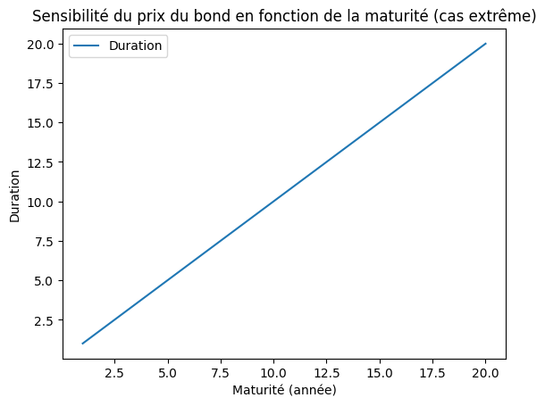
Estimation de la VaR d’une obligation.
L’estimation de la VaR sur un bond peut se faire à partir de la senssibilité de taux ou par la méthode de repricing.
Estimation de la VaR par la sensibilité du taux d’intérêt
L’approche par la sensibilité se présente de la manière suivante:
On suppose que la dynamique du taux d’intérêt est donnée par \[\Delta r \sim \mathcal{N}(0, \sigma \sqrt{\Delta t})\].
Sachant que \[\frac{\Delta P}{P} = - Duration \times \Delta r\]
il suit que \[\frac{\Delta P}{P} \sim \mathcal{N}(0, Duration \times \sigma \sqrt{\Delta t})\]
Une approche par la sensibilité de la VaR à 99% donne \[VaR = Duration \times \sigma \times \sqrt{\Delta t} \times z_{99\%}\] Où \(z_{99\%}\) est le quantile d’ordre 99% de la loi normale standard.
Pour les besoins de notre exercice, on pose \(\sigma = 1\%\).
np.float64(0.05804942383590022)La VaR à 99% d’horizon 1 an sur le bond est de 5.8%. - On note que la VaR est une fonction linéaire croissante de la volatilité. C’est une conséquence directe de l’hypothèse de normalité des variations du taux d’intérêt. Ainsi, une augmentation de la volatilité du taux d’intérêt s’accompagne d’une augmentation de la volatilité du prix du bond. - La VaR est une fonction décroissante du taux d’intérêt. En effet, une augmentation du taux d’intérêt entraîne une diminution de la valeur des bonds, et par conséquent des valeurs extrêmes atteintes par celles-ci; d’où la VaR décroît. Toutefois l’évolution de la VaR en fonction du taux d’intérêt n’est pas linéaire.
Evolution de la Z-VaR en fonction du taux d’intérêt
# Evolution de la VaR en fonction de la volatilité
vol = np.linspace(0,1e-2, num=100)
var = np.array([Sensi_VaR(sigma , H, t,c,T,r,lamda) for sigma in vol])
plt.plot(vol, var, label ="VaR_99%")
plt.xlabel("Volatilité")
plt.ylabel("VaR ")
plt.legend()
plt.title("VaR à 99% à horizon 1 an en fonction de la volatilité")Text(0.5, 1.0, 'VaR à 99% à horizon 1 an en fonction de la volatilité')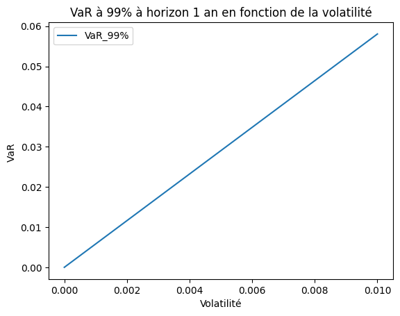
# Evolution de la VaR en fonction du taux d'intérêt
interest = np.linspace(0,1, num=100)
var = np.array([Sensi_VaR(sigma , H, t,c,T,r,lamda) for r in interest])
plt.plot(interest, var, label ="VaR_99%")
plt.xlabel("Taux d'intérêt")
plt.ylabel("VaR")
plt.legend()
plt.title("VaR à 99% à horizon 1 an en fonction du taux d'intérêt")Text(0.5, 1.0, "VaR à 99% à horizon 1 an en fonction du taux d'intérêt")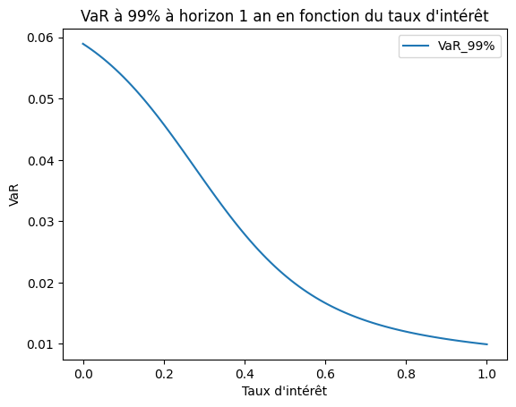
Evolution de la Z-VaR en fonction de l’intensité de défaut
Pour des intensités de défaut croissantes, la VaR du bond décroît de façon exponentielle, ceteris paribus. Tout comme avec le taux d’intérêt, une augmentation de l’intensité de défaut s’accompagne d’une imminence du défaut et par conséquent de la diminution de la valeur du bond. D’où une diminution de la VaR.
# Evolution de la VaR en fonction de l'intensité de défaut
lambdas = np.linspace(0,1, num=100)
var = np.array([Sensi_VaR(sigma , H, t,c,T,r,lamda) for lamda in lambdas])
plt.plot(lambdas, var, label ="VaR_99%")
plt.xlabel("Intensité de défaut")
plt.ylabel("VaR")
plt.legend()
plt.title("VaR à 99% à horizon 1 an en fonction de l'intensité de saut")Text(0.5, 1.0, "VaR à 99% à horizon 1 an en fonction de l'intensité de saut")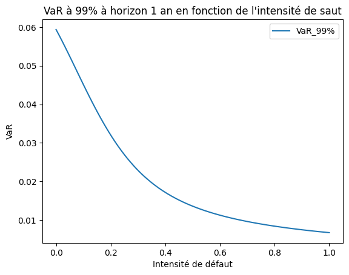
Estimation de la VaR par repricing de l’obligation
La méthodologie consiste à revaloriser le bond pour une variation du taux d’intérêt, puis d’en déduire la variation du prix du bond qui en résulte.
\[ \Delta r^* =\sigma \times \sqrt{\Delta t} \times z_{99\%} \]
\[ VaR_{99\%} = \frac{B(r+ \Delta r^*) - B(r)}{B(r)} \]
La VaR obtenue par l’approche repricing, sous les mêmes conditions que précédemment, est de 5.6%. Cette VaR est inférieure à celle obtenue sous l’hypothèse de normalité des variations du taux d’intérêt.
Ceci s’explique par le fait que la duration est une fonction convexe décroissante du taux d’intérêt et représente une approximation affine de la valeur du bond en le taux d’intérêt. De manière générale, l’approche par les sensibilités surestime la VaR.
L’évolution de la VaR, obtenue par reprincing, en fonction du taux d’intérêt ou de l’intensité de défaut (voir les graphiques ci-dessus) à la même allure que la z-VaR.
En règle générale la VaR doit être inférieure au seuil de 20% de par la limite règlementaire. L’utilisation de la z-VaR peut donc constituer un manque à gagner pour les institutions financieres. En effet, elles peuvent être amenées à dérisquer leur portefeuille en limitant leur investissements pour des raisons purement techniques.
# Valeur extrême de la sensibilité (cas extrême de nullité de lambda, r et c)
interest = np.linspace(0,1, num=100)
var = np.array([repricing_VaR(sigma , H, t,c,T,r,lamda) for r in interest])
plt.plot(interest, var, label ="VaR_99%")
plt.xlabel("Taux d'intérêt")
plt.ylabel("VaR")
plt.legend()
plt.title("VaR à 99% à horizon 1 an en fonction du taux d'intérêt")Text(0.5, 1.0, "VaR à 99% à horizon 1 an en fonction du taux d'intérêt")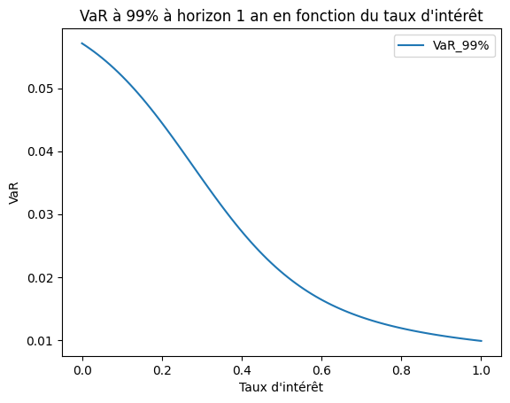
# Valeur extrême de la sensibilité (cas extrême de nullité de lambda, r et c)
lambdas = np.linspace(0,1, num=100)
var = np.array([repricing_VaR(sigma , H, t,c,T,r,lamda)for lamda in lambdas])
plt.plot(lambdas, var, label ="VaR_99%")
plt.xlabel("Intensité de saut")
plt.ylabel("VaR")
plt.legend()
plt.title("VaR à 99% à horizon 1 an en fonction de l'intensité de défaut")Text(0.5, 1.0, "VaR à 99% à horizon 1 an en fonction de l'intensité de défaut")Risque de contrepartie
Dans le cadre d’un engagement contratuel incluant deux parties prenantes, le risque de contrepartie fait reférence au rique de perte suite au défaut d’une des parties à remplir les engagements contractuels pré-établis: c’est un risque bilatéral.
Afin de se couvrir du defaut de l’émetteur d’un bond, l’acheteur du bond peut entrer dans un credit default swap (CDS). Dans un tel contrat, lorsque la contrepartie est correlée à l’émetteur de l’obligation on parle de wrong way risk ce qui a pour conséquence d’exposer davantage le souscripteur. La contrepartie doit donc être décorrelée de l’émetteur.
Le risque de contrepartie est en général mitigé par les appels de marge (chambre de compensation). - Quand la qualité de l’émetteur se dégrade, son spread de crédit spread croît et le CDS s’apprécie. - Si la contrepartie fait défaut, le détenteur perd \(CDS = 1-R\). - Un mécanisme d’appel de marge permet de mitiger le risque.
Lien entre CDS et obligation: la formule du triangle de crédit
Un estimation du taux sans risque d’une obligation:
\[\begin{align} P &= \sum_{i=1}^{n} c \times e^{-(\lambda+r)T_i} + e^{-(r+\lambda)T_n } + \lambda R\frac{1 - e^{-(r+\lambda)T_n}}{r+\lambda} \end{align}\]
\[\begin{align} P &= c \int_0^T \times e^{-(\lambda+r)t} + e^{-(r+\lambda)T } + \lambda R\frac{1 - e^{-(r+\lambda)T}}{r+\lambda} \end{align}\]
\[\begin{align} P &= c \frac{1 - e^{-(r+\lambda)T}}{r+\lambda} + e^{-(r+\lambda)T } + \lambda R\frac{1 - e^{-(r+\lambda)T_n}}{r+\lambda} \end{align}\]
L’obligation est au pair si et seulement si P = 1 Ainsi,
\[ (c + \lambda R) \frac{ 1- e^{-(r + \lambda )T}}{r + \lambda} + e^{-(r + \lambda)T} = 1 \]
Quand T tend vers l’infini le taux sans risque vaut alors, \[ (c + \lambda R) = r + \lambda \]
\[ (c - r ) = \lambda (1 - R) \] - \(c-r\): spread ou prime de risque - \(\lambda\): intensité de défaut - \(1-R\): LGD \[ Spread = PD \times LGD \]
CDS: principe
- Premium Leg: est payé tant que l’émetteur est “en vie”. \[ PL = \int_0^T s \times e^{-rt} \times e^{-\lambda t}dt = s \frac{1-e^{-(r+\lambda)T}}{r + \lambda}\]
- Default Leg: compensation à la date t si le défaut y survient. \[DL = \int_0^T(1-R) e^{-rt}\times e^{-\lambda t} dt = \lambda (1-R) \frac{1-e^{-(r+\lambda)T}}{r+\lambda}\].
La valeur initiale d’un spread étant nulle, les deux jambes sont égales et il on obtient:
\[ s = \lambda (1-R) \]
Un estimation de ce spread peut donc être déduite de la formule du triangle de crédit.
Sensibilité de crédit
La sensibilité de crédit d’une obligation est la variation du prix de l’obligation lorsque varie le spread de crédit de la contrepartie. De la formule du triangle, la sensibilité de crédit peut être déduite de la sensibilité par rapport à l’intensité de défaut \(\lambda\).
\[ \frac{\partial P}{\partial s} = \frac{1}{1 - R} \frac{\partial P}{\partial \lambda} \]
\[ \frac{\partial P}{\partial s} \times \frac{1}{P}= \frac{1}{1 - R} \frac{\partial P}{\partial \lambda} \times \frac{1}{P} \]
On peut calculer une VaR taux et une VaR crédit. Toutefois, la VaR qui sera regardée de près est celle issue de la variation conjointe des taux et des spreads de crédit.
Une variation d’un point de pourcentage du spread de crédit entraîne une variation de 8.82% de la valeur du bond. Cette sensibilité de crédit est assez proche de la sensibilité taux. En effet, on observe de l’écriture mathématique de la valeur du bond que le taux d’intérêt et l’intensité apparaissent conjointement de façon additive (sauf pour le terme de recouvrement).
Ces deux sensibilitées sont identiques pour un taux de recouvrement nul.
Estimation de la VaR par variation conjointe du taux d’intérêt et du spread de crédit
On suppose que la dynamique du taux d’intérêt est donnée par l’EDS
\[ dr_t = \sigma dW_t \]
Le spread ne prenant pas de valeur négative, on supposera qu’il est log-normal. Sa dynamique est donnée par l’EDS
\[ \frac{ds_t}{s_t} = \alpha dZ_t \]
En supposant \(dW_t dZ_t = \rho\) et \(Z_t = \rho W_t + \sqrt{1-\rho^2}V_t\) tel que \(dV_t dW_t = 0\),
La dynamique du spread s’écrit alors \[ \frac{ds_t}{s_t} = \alpha (\rho W_t + \sqrt{1-\rho^2}V_t) \]
En appliquant un schéma de discrétisation d’Euler, on peut alors simuler les taux \(r_t\) et les spreads \(s_t\) par:
\[ r_H = r + \sigma \sqrt{H} W_H \]
\[ s_H = s(1 + \alpha \rho \sqrt{H} W_H + \alpha \sqrt{1-\rho^2} \sqrt{H} V_H) \]
Où H est le pas de discrétisation.
La méthodologie de détermination de la sensibilité du prix d’une obligation conjointement au taux d’intérêt et au spread de crédit est la suivante: - Calculer la valeur du bond pour les paramètres initiaux - Simuler les taux \(r_H\) et les spreads \(s_H\) - Pour chaque simulation, calculer la valeur du bond (cetertis paribus) - pour déterminer la variation des nouveaux prix par rapport au prix initial - calculer le quantile d’ordre 99% des variations obtenues
# Sensibilité conjointe de taux et de crédit
def SimSpread(c,T,r,lamda, R, alpha, rho, H = 1/12, M=10_000):
u1 = np.random.uniform(0,1, size = M)
u2 = np.random.uniform(0,1, size = M)
w = norm.ppf(u1)
v = norm.ppf(u2)
s = lamda*(1-R)
r_H = r + sigma*np.sqrt(H)*w
s_H = s*(1 + alpha*rho*np.sqrt(H)*w + alpha*np.sqrt(1-rho**2)*np.sqrt(H)*v)
P_0 = Bond(0,c,T,r,lamda, R)
P_1 = Bond(H,c,T,r_H,s_H/(1-R), R)
mu = (P_1 - P_0)/P_0
return - np.quantile(mu,0.01)
np.float64(0.0602691861203251)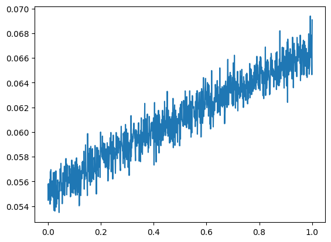
La corrélation \(\rho\) doit être positive, car une augmentation des taux d’intérêt entraîne une meilleure rémunération du marché par rapport aux obligations. Pour rester attractifs, les coupons doivent alors augmenter. Cette hausse des coupons accroît le coût de financement de l’émetteur, ce qui conduit à une augmentation du spread de crédit. Il en résulte une corrélation positive entre les taux d’intérêt et les spreads de crédit.
Une augmentation conjointe des taux et des spreads accroît le risque de défaut, en raison de la corrélation positive entre ces deux facteurs de risque. Ainsi, une corrélation élevée reflète un manque de diversification, ce qui expose davantage le portefeuille au risque systémique
Quelques notions sur le risque modèle et le risque climatique
Risque modèle
Le risque modèle désigne le risque associé à l’utilisation d’un modèle mathématique ou statistique qui ne représente pas correctement la réalité ou qui mène à des décisions erronées en finance et en gestion des risques.
Eléments du suivi du risque modèle: - Sanity check: Ecart de performance - Backtesting: Application aux données antérieures - Comparaison avec desmodèles plus riches - Provisionner au titre du risque de modèle
Risque climatique
Le risque climatique désigne les risques financiers liés au changement climatique et aux politiques de transition vers une économie bas carbone. Sa modélisation reste complexe, notamment en raison du manque de données historiques et de l’absence d’un cadre réglementaire clairement défini.
On distingue deux principaux types de risques climatiques :
Risque physique: l correspond aux pertes financières causées par des événements climatiques extrêmes. Il est défini par deux éléments clés : la fréquence et la sévérité des événements.
- Risque aigu : Événements rares mais très intenses ( ouragans, inondations).
- Risque chronique : Changements progressifs et durables (élévation du niveau de la mer).
Risque de transition: il découle de l’adaptation des entreprises et des acteurs économiques aux exigences de transition écologique.
- Risque politique et réglementaire : Durcissement progressif des régulations environnementales (taxe carbone).
- Opportunités technologiques : Innovations favorisant la transition énergétique et redéfinissant les modèles économiques.
La resilience des institutions financieres notamment aux changement climatique est évaluée via des stress tests climatiques dont les scénarios sont issus des données du NGFS (Network for Greening financial System).